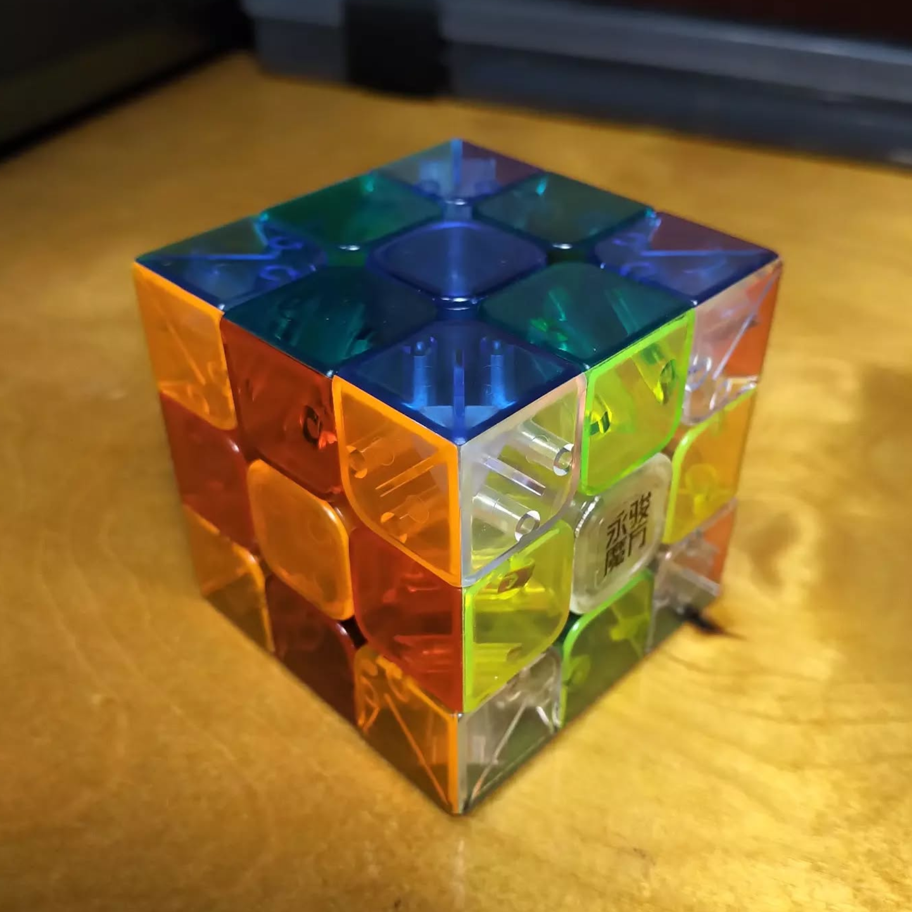
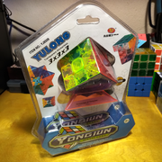
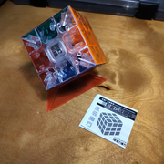
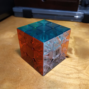
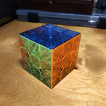
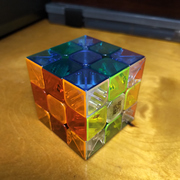
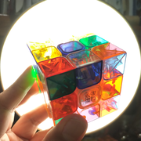
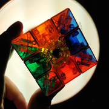

YJ Yulong Transparent
{kind=link}

YJ8509 (2013)
YJ Yulong 3 × 3 Transparent. It's finally here! I'm surprised that this cube isn't more popular, or that more cube companies aren't producing clear cubes. I get that color recognition is not that good, and would be unsuitable for speedcubing, but... come on! It looks like a piece of ice! It's like the Infinity Stones! I can't stop looking at it. The white side is actually clear, so you can see the other colors through white faces, and the other faces tint the colors below in many interesting ways; this is made more dramatic shining a light behind the cube. As my first #grail cube, it does not disappoint. And, oh yeah, it turns reasonably well and the tension is adjustable through the screw. Also my first cube that came in clamshell packaging. I think I am 4/6 with the clear cubes; I have another on the way, and I might get the Rubik's Crystal next year.
Original post: https://www.instagram.com/p/Cltd_UdrOLT
Specifications
| Make | YJ |
|---|---|
| Model | Yulong |
| Edition/Variant | Transparent |
| Model no. | YJ8509 |
| Release year | 2013 |
| 🧲 (edge-corner) | ❎ |
|---|---|
| 🧲 (Core) | ❎ |
| 🧲 (Maglev) | ❎ |
| Stickerless | ✅ |
| Internals | Split-piece design (transparent) |
|---|---|
| Externals | Transparent; clear for white |
| Adjustment | Philips screw - axis distance |
| Remarks | Packaged in a blister pack (instead of cardboard cube box); also known as the YJ8304T in some sources |
Photos
{kind=link}

Cube blister pack (with model number)
{kind=link}

Cube with stand and pamphlet
{kind=link}

Cube (red, green, white)
{kind=link}

Cube (yellow, blue, orange)
{kind=link}

Cube (checkerboard state)
{kind=link}

Cube (scrambled state)
{kind=link}

Cube (dramatic lighting)
Collections
This cube is part of the following collections: